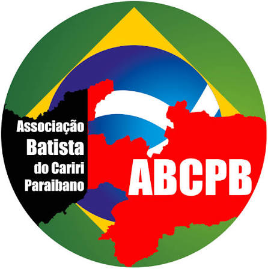

Quem Somos
Igrejas batistas que caminham juntas para servir a Deus e ao povo do Cariri paraibano.
Cooperação que nasceu no sertão
Texto provisório: substitua pela história real da associação.
A Associação Batista do Cariri Paraibano foi organizada em [ano de fundação] por igrejas batistas da região que desejavam somar forças para a evangelização, o cuidado pastoral e a ação social no semiárido paraibano.
Desde então, a ABCPB tem acompanhado o crescimento das igrejas, apoiado a plantação de novas congregações e promovido encontros que fortalecem a comunhão entre os batistas do Cariri.
A associação coopera com a Convenção Batista Paraibana e com a Convenção Batista Brasileira, participando dos planos de Missões Estaduais, Nacionais e Mundiais.

Missão, visão e valores
Missão
Promover a cooperação entre as igrejas batistas do Cariri paraibano para a proclamação do Evangelho, a formação de discípulos e o serviço à comunidade.
Visão
Ver cada cidade e comunidade rural do Cariri alcançada por uma igreja saudável, missionária e comprometida com a Palavra.
Valores
- Fidelidade às Escrituras
- Cooperação e unidade
- Autonomia da igreja local
- Paixão missionária
- Amor e serviço ao próximo
Diretoria
Nomes provisórios. Para colocar foto, troque as iniciais por <img src="assets/img/diretoria/nome.jpg" alt="">.